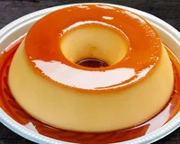

home Receita 1 Receita 2 Receita 3
Veja como fazer essa receita de pudim de leite condensado lisinho e com uma calda perfeita de caramelo.

Veja como fazer essa receita de pudim de leite condensado lisinho e com uma calda perfeita de caramelo. Ele é delicioso, barato e bem rápido de preparar! Com sua textura macia e sabor inconfundível, esse doce é uma verdadeira tentação para os amantes de sobremesas tradicionais. Fácil de preparar e com ingredientes simples, o pudim é uma opção perfeita para adoçar qualquer ocasião especial. Com um modo de preparo bem simples, envolvendo poucos ingredientes como leite condensado, leite, ovos e açúcar para a calda, você irá criar uma sobremesa que certamente vai encantar a todos os paladares. Surpreenda sua família e amigos com esse clássico da culinária, que além de delicioso, possui uma apresentação encantadora. Siga o passo a passo desta receita e mergulhe nessa experiência de sabores que certamente vai conquistar a todos.